Object Detection¶
matchTemplate¶
Compares a template against overlapped image regions.
- C++: void matchTemplate(InputArray image, InputArray templ, OutputArray result, int method)¶
- Python: cv2.matchTemplate(image, templ, method[, result]) → result¶
- C: void cvMatchTemplate(const CvArr* image, const CvArr* templ, CvArr* result, int method)¶
- Python: cv.MatchTemplate(image, templ, result, method) → None¶
Parameters: - image – Image where the search is running. It must be 8-bit or 32-bit floating-point.
- templ – Searched template. It must be not greater than the source image and have the same data type.
- result – Map of comparison results. It must be single-channel 32-bit floating-point. If image is 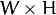 and templ is 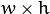 , then result is 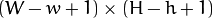 .
- method – Parameter specifying the comparison method (see below).
The function slides through image , compares the
overlapped patches of size
against templ using the specified method and stores the comparison results in result . Here are the formulae for the available comparison
methods (
 denotes image, 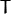 template, 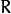 result ). The summation is done over template and/or the
image patch:
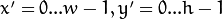
* method=CV_TM_SQDIFF
denotes image, 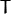 template, 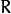 result ). The summation is done over template and/or the
image patch:
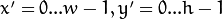
* method=CV_TM_SQDIFF
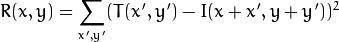
method=CV_TM_SQDIFF_NORMED
method=CV_TM_CCORR
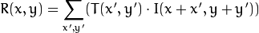
method=CV_TM_CCORR_NORMED
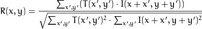
method=CV_TM_CCOEFF
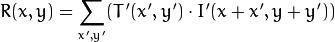
where
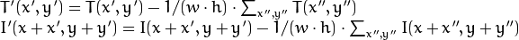
method=CV_TM_CCOEFF_NORMED
After the function finishes the comparison, the best matches can be found as global minimums (when CV_TM_SQDIFF was used) or maximums (when CV_TM_CCORR or CV_TM_CCOEFF was used) using the minMaxLoc() function. In case of a color image, template summation in the numerator and each sum in the denominator is done over all of the channels and separate mean values are used for each channel. That is, the function can take a color template and a color image. The result will still be a single-channel image, which is easier to analyze.
Note
- (Python) An example on how to match mouse selected regions in an image can be found at opencv_source_code/samples/python2/mouse_and_match.py
Help and Feedback
You did not find what you were looking for?- Ask a question on the Q&A forum.
- If you think something is missing or wrong in the documentation, please file a bug report.